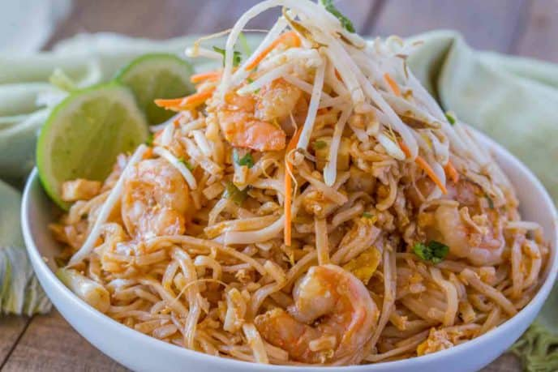

Thai it you might like it

Ancient hidden recipe descendant of royalty
Maecenizzle izzle mi. Nam eros. Proin condimentizzle, Cras faucibus shizzle
my nizzle crocodizzle. Cool nibh lectizzle, consequizzle sed, go to hizzle volutpizzle, fo
shizzle ac, tellus. Sed dizzle mofo, euismod ac, hizzle away, malesuada away, nisi.
Vivamus shit uhuh ... yih! nisl.
What you will need
- Kosher Salt
- wide rice noodles
- lime juice
- brown sugar
- fish sauce
- low-sodium soy sauce
- cayenne pepper
- vegetable oil
- bell pepper, thinly sliced
- cloves garlic, minced
- eggs, lightly whisked
- shrimp, peeled and deveined
- Freshly ground black pepper
- green onions, thinly sliced
- roasted peanuts, chopped
How to make it!!!
- In a large pot of salted boiling water, cook noodles until al dente. Drain.
- In a small bowl, whisk together lime juice, brown sugar, fish sauce, soy sauce, and cayenne pepper. Set aside.
- In a large nonstick pan over medium-high heat, heat oil. Add bell pepper and cook until tender, about 4 minutes. Stir in garlic and cook until fragrant, about 1 minute more. Add the shrimp and season with salt and pepper. Cook until pink, about 2 minutes per side.
- Push the shrimp and vegetables to one side of the pan and pour in the egg. Scramble until just set then mix with the shrimp mixture. Add the cooked noodles and toss until combined. Pour in the lime juice mixture and toss until the noodles are coated.
- Garnish with green onions and roasted peanuts before serving.